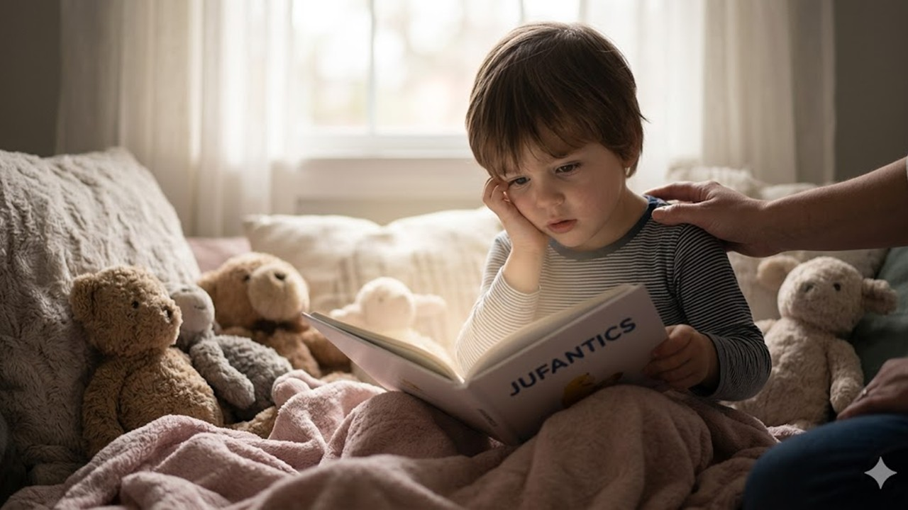
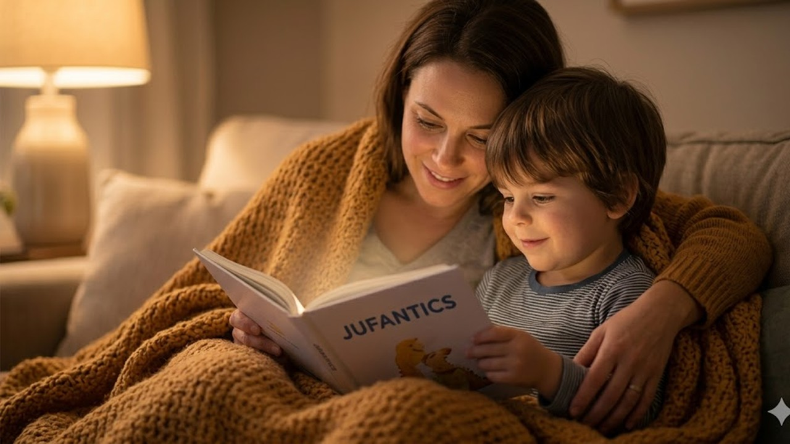
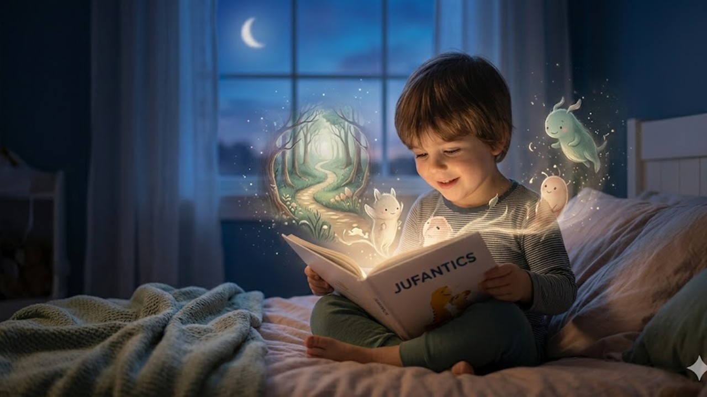

La lectura como el refugio donde las emociones encuentran su lugar.
Hay días en los que el mundo se siente demasiado grande, demasiado ruidoso o simplemente incomprensible para un niño. En esos momentos, las emociones no siempre encuentran el camino hacia las palabras; se quedan enredadas en el pecho, manifestándose en silencios largos, rabietas inexplicables o una mirada perdida. Es ahí, en la penumbra de la duda, donde un cuento abierto se convierte en una linterna.


En JUFANTICS, creemos que un libro no es solo un objeto, sino un espacio seguro. Leer con un niño no es solo pasar páginas; es ofrecerle un mapa para navegar su propio universo interior.
Un niño sentado en un rincón acogedor encuentra calma al abrir un libro, mientras una figura adulta está cerca, tocando suavemente su hombro.
Para un niño, especialmente para aquellos con una sensibilidad profunda o procesamientos distintos, la realidad puede ser abrumadora. Las historias actúan como una "isla inesperada", como diría Gustavo Martín Garzo. En ese lugar, el niño no está solo. Si siente miedo, el protagonista de su cuento también lo siente. Si se siente diferente, encuentra en las páginas a otros seres que ven el mundo con colores que nadie más nota.
La lectura permite que el dolor o la confusión se trasladen a un personaje. Al ver cómo un pequeño explorador atraviesa un bosque oscuro, el niño aprende que él también puede cruzar sus propias sombras. La imaginación no es una forma de escapar de la realidad, sino la herramienta más poderosa para transformarla.
Un niño leyendo en su cama. A su alrededor, la habitación se transforma sutilmente con ilustraciones mágicas que parecen nacer del libro.
A veces, el mayor alivio para un corazón infantil es descubrir que lo que siente tiene un nombre y que no es "malo" sentirlo. Los cuentos ofrecen metáforas que sanan: la tristeza puede ser una nube gris que viene de visita, y el enojo puede ser un volcán que necesita aprender a respirar.
"Contar historias es una forma de curarnos, individual y colectivamente. Las historias son las que nos pueden salvar y reparar lo que parecía irreparable."
— Tessa HullsCuando personalizamos una historia, ese efecto se multiplica. El niño se ve a sí mismo como el héroe de su propia sanación. No es solo "un niño" quien vence al dragón de la ansiedad, es él, con su nombre, sus pecas y su pijama favorito. Eso construye una identidad fuerte, recordándole que su voz tiene el poder de cambiar su entorno.
Una toma íntima y cálida: un padre o madre y un niño abrazados bajo una manta suave, leyendo juntos. Sus expresiones son de calma y alegría compartida.
El acto de leer juntos es, quizás, el ritual de crianza más sanador que existe. Es un momento de pausa total. El roce de los hombros, el tono de voz suave y el ritmo de la respiración compartida crean un puente emocional que dice: "Aquí estás a salvo."
Para las familias que acompañan la neurodiversidad, este puente es vital. En la lectura no hay demandas, no hay expectativas de "comportarse" de cierta forma; solo hay presencia y asombro. Es un lenguaje universal donde el acompañamiento y la comprensión pesan más que cualquier diagnóstico.
En JUFANTICS creamos cuentos únicos con el nombre, la cara y el corazón de tu hijo.
✨ Quiero crear su cuentoSi hoy te sientes atrapada en la rutina o si sientes que las emociones de tus pequeños son un laberinto sin salida, recuerda nuestra esencia en JUFANTICS:
Si te sientes atrapada en emociones, escríbelas y transfórmalas. Si sientes que no perteneces, crea tu propio universo. Usa tu maravilla y vive.
— JUFANTICSLas historias tienen el poder de recordarnos que siempre hay una salida, que siempre podemos inventar un amigo cuando nos sentimos solos y que el papel es el único lugar donde lo imposible se vuelve hogar.
✦ Descubre JUFANTICS
Creamos cuentos personalizados que no solo narran viajes mágicos, sino que abrazan el espíritu de cada niño, celebrando su forma única de estar en el mundo.